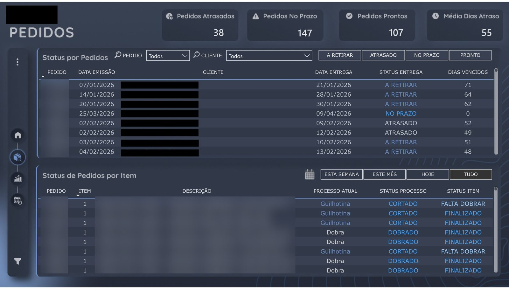

Projeto realGestão integrada de pedidos, produção e carteira de clientes
Relatório em Power BI com 188 medidas DAX que calcula fila por máquina, prazo real por rota de produção e concentração de receita por cliente.
Busco minha primeira posição formal como Analista de Dados Júnior ou Analista de BI. Construo painéis em Power BI e rotinas de ETL a partir de problemas reais de pedidos, prazos e produção na indústria.
Sou tecnóloga em Análise e Desenvolvimento de Sistemas (UniCesumar, 2024). Trabalho na Perfinorte, indústria metalúrgica de Maringá, desde 2018: fui Jovem Aprendiz, Programadora CNC e, desde 2021, atuo na área comercial, acompanhando pedidos e prazos no ERP.
Os projetos deste portfólio nasceram por iniciativa própria, a partir de dores que vi na operação. Em cada página explico o problema, o raciocínio e o que foi implementado.

Projeto realRelatório em Power BI com 188 medidas DAX que calcula fila por máquina, prazo real por rota de produção e concentração de receita por cliente.
Disponível para oportunidades em Análise de Dados e BI, com mudança de localidade e viagens.